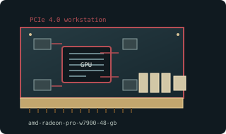

[ WORKSTATION GRAPHICS CARDS // IDENTIFIED COMPONENT ]
AMD Radeon Pro W7900 48 GB
Navi 31 / RDNA 3 professional, 2023. This entry identifies one model or reference configuration; related products and OEM variants are distinguished below.

MODEL / VARIANT: W7900 professional SKU differs from Radeon RX 7900 XTX in memory capacity, firmware, output certification and power. Verify exact board/region and software support.
Recorded specifications
| Cataloged product | AMD Radeon Pro W7900 48 GB |
|---|---|
| Generation / core | Navi 31 / RDNA 3 professional, 2023 |
| Core & memory | Navi 31; 6144 stream processors; 48 GB GDDR6 with ECC; 384-bit bus; 295 W typical board power. |
| Host interface & I/O | PCI Express 4.0 x16; two 8-pin auxiliary inputs; three DisplayPort 2.1 outputs on reference workstation card. |
| Variant boundary | W7900 professional SKU differs from Radeon RX 7900 XTX in memory capacity, firmware, output certification and power. Verify exact board/region and software support. |
| Archival identification | Record full part number, PCB or module revision, BIOS/firmware, device/subsystem IDs, driver version, adapters, physical condition and source-document edition. |
Compatibility, service & archival notes
48 GB ECC-capable GDDR6 and workstation driver qualification distinguish this W7900 from consumer 7900-series boards.
Check both 8-pin leads, triple-slot clearance and active cooling; document ECC state, serial/firmware, and Radeon Pro driver version. Preserve shipping brackets.
- Check signaling, slot keying, lane width, power pinout, board/module dimensions, case clearance, airflow and PSU requirements for the exact specimen.
- Use drivers supporting its device ID and target OS. Preserve original installer and firmware copies, and record their versions before changes.
- Do not energize boards with corrosion, cracks, damaged connectors, obstructed cooling or suspected shorts; document condition before bench testing.
Manufacturer, model & standards sources
- AMD Radeon Pro W7900 product specificationsModel/product-history reference; compare the exact card revision and nameplate.
- AMD/ATI legacy product and driver archiveManufacturer or archived product/driver documentation; exact OEM board details may differ.
- PCI Express interface standardHost interface reference; confirm exact physical and electrical compatibility.
Reference specifications do not supersede the board vendor's manual or nameplate. Performance figures are vendor claims unless explicitly identified as measured.